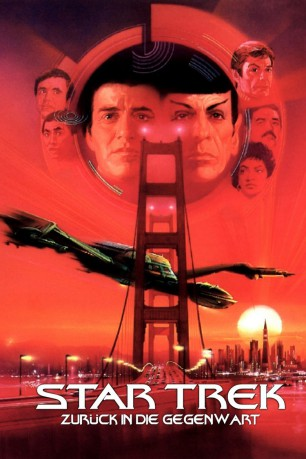

#410 Star Trek 04 - Zurück in die Gegenwart
Alternativ: Star Trek IV: The Voyage Home
Auszeichnungen: für 4 Oscars nominiert
 
 IMDB-Wertung: 7.3 / 10
IMDB-Wertung: 7.3 / 10  Metascore: 71
Metascore: 71 
Obwohl sie als Abtrünnige gelten, kehrt die Mannschaft der U.S.S. Enterprise zur Erde zurück. Sie stellen sich der Anklagen für die Taten, die sie im Laufe von Spocks Rettung begangen haben. Während sie noch im Anflug sind, wird die Erde von einer außerirdischen Sonde verwüstet. Sie verlangt Antwort von einer Lebensform, die nicht länger existiert. Kirk und seine Crew begeben sich an Bord eines gekaperten klingonischen Bird of Prey auf eine Reise durch Raum und Zeit, um die Erde zu retten. Sie entdecken dabei die wahre Bedeutung von Freundschaft wieder.
Jahr: 1986
Dauer: 119 Minuten
FSK: 12
Land: USA Studio: Paramount PicturesTonspuren: DD2.0 - ,
Untertitel: Deutsch, Englisch,
Auflösung: 1080p (1920x818) Größe: 10752 MB
Genre: Sci-Fi, Komödie, Abenteuer
Regisseur:  Leonard Nimoy
Leonard Nimoy
Drehbuch: Gene Roddenberry, Leonard Nimoy, Harve Bennett, Steve Meerson, Peter Krikes
Soundtrack: Leonard Rosenman
Darsteller:
 William Shatner als Kirk
William Shatner als Kirk Leonard Nimoy als Spock
Leonard Nimoy als Spock DeForest Kelley als McCoy
DeForest Kelley als McCoy James Doohan als Scotty
James Doohan als Scotty George Takei als Sulu
George Takei als Sulu Walter Koenig als Chekov
Walter Koenig als Chekov Nichelle Nichols als Uhura
Nichelle Nichols als Uhura- Jane Wyatt als Amanda
- Catherine Hicks als Gillian
 Mark Lenard als Sarek
Mark Lenard als Sarek- Robin Curtis als Lt. Saavik
- Robert Ellenstein als Federation Council President
 John Schuck als Klingon Ambassador
John Schuck als Klingon Ambassador Brock Peters als Admiral Cartwright
Brock Peters als Admiral Cartwright- Michael Snyder als Starfleet Communications Officer
 Michael Berryman als Starfleet Display Officer
Michael Berryman als Starfleet Display Officer Grace Lee Whitney als Commander Rand
Grace Lee Whitney als Commander Rand- Jane Wiedlin als Alien Communications Officer
 Majel Barrett als Commander Chapel
Majel Barrett als Commander Chapel- John Miranda als 2nd Garbageman
- Tony Edwards als Pilot
- Raymond Singer als Young Doctor
- Jeff Lester als FBI Agent
- Joe Lando als Shore Patrolman
- Mike Timoney als Electronic Technician
 Stephen Liska als Torg , archive footage, uncredited
Stephen Liska als Torg , archive footage, uncredited- Anthony J Sacco als Cop , uncredited
- Madge Sinclair als Saratoga Captain , uncredited
 Philip Weyland als Tourist , uncredited
Philip Weyland als Tourist , uncredited- Mike Brislane als Saratoga Science Officer
- Vijay Amritraj als Starship Captain
- Nick Ramus als Saratoga Helmsman
- Thaddeus Golas als Controller #1
- Marty Pistone als Controller #2
- Scott DeVenney als Bob Briggs
- Viola Kates Stimpson als Lady in Tour
- Phil Rubenstein als 1st Garbageman
- Joe Knowland als Antique Store Owner
- Bob Sarlatte als Waiter
- Everett Lee als Cafe Owner
- Richard Harder als Joe
- Alex Henteloff als Nichols
- Eve Smith als Elderly Patient
- Tom Mustin als Intern #1
- Greg Karas als Intern #2
- David Ellenstein als Doctor #1
- Judy Levitt als Doctor #2
- Teresa E. Victor als Usher
- James Menges als Jogger
- Kirk R. Thatcher als Punk on Bus
Datei: X:\7+mehr(A-Z)\Star Trek\Star Trek 04 - Zurück in die Gegenwart (1986, FSK12, 1920x818).mkv seit 21.02.2015
Festplatte: HD Collection-7+mehr(A-Z)+Person
 Es gibt insgesamt 19 Filme in der Gruppe '7+mehr(A-Z)\Star Trek'
Es gibt insgesamt 19 Filme in der Gruppe '7+mehr(A-Z)\Star Trek'